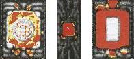

|
Scanning
Acoustic Microscopy (SAM)
Scanning Acoustic Microscopy (SAM)
is a failure analysis technique used for detecting disbonds or
delaminations between
package
interfaces, e.g., interfaces between the plastic resin package material, the die,
the die paddle, the leadframe, the die attach material, etc.
It basically consists of sending a
sound wave through the
package, and interpreting the
interaction of the sound wave with the
package. A typical
scanning acoustic microscope
(see
Figure 1) may employ either
pulse echo or through transmission inspection to scan for disbonds or
delaminations.
Pulse echo
inspection consists of interpreting echos sent back by the package while
through transmission inspection consists of interpreting the sound wave
at the other end of the package, after it has passed through the latter.
The ultrasonic wave frequency used ranges from 5 to 150 MHz.
|
|
|
Figure 1.
Example of a Scanning Acoustic Microscope
|
The
sound wave may be generated by a piezoelectric crystal, or transducer,
that has been cut to provide a specific frequency.
It is activated by a high voltage pulse from a transmitter, which
is also known as the
pulser. The activation would cause the transducer
to vibrate at the specified frequency, which transmits an ultrasonic
wave through the package.
This wave travels to the specimen through a
medium or
couplant, which is usually
deionized water since sound waves
could not travel through air at the frequencies used.
The wave travels through the specimen's material at the
material's velocity, with a portion of it being reflected back everytime
it hits an interface within the material.
In the
pulse echo
method, the
same
transducer is used as sender and receiver of the sound waves. Pulses are
repeated using repetition rates at which the echoes from one pulse will
not interfere with those of another, e.g., 10-20 KHz.
The echoes received by the transducer are converted to voltages,
amplified, digitized, and presented to the user as an image.
In the
through
transmission
technique,
separate
transducers are used to send and receive sound waves, both of which are
on opposite sides of the specimen.
The absence and presence of signals mean bad and good bonding,
respectively.
Scanning
acoustic microscopy has several modes. The
A-scan mode is the real-time
oscilloscope waveform of the acoustic signals based on the reflected
echoes, or acoustic data collected at a single X-Y portion or point.
The
B-scan mode
is the cross-sectional display showing the
ultrasonic reflection of the various interfaces along the depth of the
package, or acoustic data collected along the X-Z plane at depth A.
A B-mode scan furnishes a two-dimensional (cross-sectional)
description along a test line (Y).
The
C-scan mode is the display of the
image of reflected echoes at the focused plane of interest, or
acoustical data collected along an X-Y plane at depth Z. A C-mode scan
furnishes a two-dimensional (area) description at a particular depth
(Z) (see Figure 2). Usually the B-scan images are based on the C-scan image for precise
determination of the depth of flaws detected.

Figure 2.
Examples of C-SAM Photos;
red areas
denote full delamination while yellow
areas denote
slight delamination
When
performing Scanning Acoustic Microscopy, the following must be observed
:
1)
The units must be placed in the sample holder such that their upper
surfaces are parallel to the scanning plane of the acoustic transducer.
Air bubbles must be swept away from the unit surfaces and from the
bottom of the transducer head.
2)
The transducer with the highest center frequency that still provides
sufficient signal-to-noise ratio for good imaging must be selected. The
transducer must be normal to the plane of the sample and the scan path
must be parallel to the plane of the stage.
Failure
Mechanisms/Attributes Tested For:
Plastic-to-Leadframe Delamination, Plastic-to-Die Delamination,
Plastic-to-Die Attach Delamination, Die Attach Voids, Internal Cracks,
etc.
Internal delaminations generally need to be addressed (especially those
that occur on the die surface and bonding fingers) because they can lead
to serious reliability issues such as neck breaks, heel breaks, and
corrosion.
See Also:
Failure
Analysis; All
FA Techniques;
Sectioning;
SEM/TEM;
FA Lab
Equipment; Basic FA
Flows;
Package Failures; Die
Failures
HOME
Copyright
© 2001-2005
www.EESemi.com.
All Rights Reserved.
|